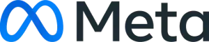

Océan
Toutes vos conversations, un seul flux.
Océan est le cœur entrant et sortant de Sairen : chaque message, chaque appel, chaque campagne, dans une boîte de réception collaborative et qualifiée par l'IA.
Tous les canaux, qualifiés automatiquement
WhatsApp, SMS, e-mail, voix, Instagram, Messenger, web : tout converge dans Océan. Chaque conversation reçoit priorité, type de client et analyse de sentiment — l'équipe traite dans le bon ordre.
- Vue partagée, multi-canaux
- Priorité & sentiment par l'IA
- Historique client complet en 1 clic
- Filtres & océans personnalisés
Des campagnes sortantes, cross-canal
Océan ne fait pas qu'écouter : il parle aussi. Lancez des campagnes outbound — WhatsApp, SMS, e-mail et agent vocal IA — vers des segments précis, et suivez l'avancée en temps réel. Réponses entrantes ? Elles reviennent dans l'inbox, dans la même conversation.
- Outbound WhatsApp · SMS · e-mail · vocal
- Segmentation par historique & tags
- Suivi : envoyés, ouverts, répondus
- Les réponses reviennent dans Océan
Au-delà du texte, Sairen passe de vrais appels : campagnes d'appels sortants, confirmations vocales, relances téléphoniques automatisées. L'agent parle, comprend les réponses, et met à jour la conversation dans Océan — à grande échelle.
Canaux
Tous les canaux, unifiés dans Océan
Vos clients vous parlent où ils veulent. Sairen réunit chaque canal dans une seule conversation.

Tech ProviderPartenaire technologique officiel de Meta
Sairen est Tech Provider du programme Meta . Concrètement : un accès direct à l'API WhatsApp Business Cloud, à Messenger et Instagram, sans intermédiaire. Activation rapide de WhatsApp, numéros vérifiés, campagnes via templates approuvés, fiabilité entreprise — le tout depuis Sairen.
Le canal n°1 en France. Conversations entrantes, réponses IA, campagnes sortantes via templates. Activation rapide grâce à notre statut Tech Provider Meta.
Rappels de RDV, confirmations, relances urgentes. Taux d'ouverture quasi total.
Support, suivi, échanges longs et pièces jointes. Unifié avec les autres canaux.
Agents vocaux IA entrants et sortants : RDV, qualification, relances. Ne manquez plus un appel.
RDV et consultations en visioconférence : lien généré, rappel envoyé, suivi rattaché. Idéal santé, conseil et services à distance.
DM et commentaires gérés depuis Océan. Parfait retail, beauté, hôtellerie. Connexion native via Meta.
Conversations Facebook centralisées. Connexion native via Meta.
Un chat sur votre site, animé par vos agents IA avec interfaces génératives.
Desk
Le travail d'équipe, structuré.
Là où Océan capte les conversations, Desk les transforme en action : des tâches claires, une communication interne façon Slack, et tout dans votre poche grâce à l'appli mobile.
Le rôle des humains
L'IA gère le volume. Vos équipes font la différence.
Sairen ne remplace pas vos collaborateurs : il les libère du répétitif pour qu'ils se concentrent sur ce qui compte — les cas sensibles, la relation, la décision.
Plusieurs cabinets, agences ou points de vente ? Chaque entité a son espace, ses canaux et ses droits — tout en restant pilotable depuis un seul compte.
Support, commercial, SAV : créez des équipes, routez-leur les bonnes conversations et tâches, et suivez leur charge.
Chaque collaborateur a son périmètre, ses tâches assignées et ses notifications. La responsabilité est claire, rien ne se perd.
De la conversation à la tâche, sans friction
Chaque échange capté dans Océan peut devenir une tâche assignable : statut, priorité, échéance, responsable. Vos équipes savent exactement quoi traiter, dans quel ordre — et rien ne tombe entre les mailles.
- Statuts clairs : Ouvert · À faire · Résolu
- Priorité & échéance sur chaque tâche
- Assignation à une personne ou une équipe
- Filtres : en cours, en retard, favoris
Une vraie messagerie d'équipe, intégrée
Desk intègre une vraie messagerie d'équipe : des canaux thématiques (#sales-b2b, #cmsm, #support), des messages directs, des mentions @. Et surtout : partagez une tâche dans un canal, mentionnez un collègue, et le contexte client suit — sans quitter Sairen.
- # Canaux par équipe, projet ou client
- Messages directs & groupes privés
- Mentions @ et partage de tâches inline
- Le contexte client toujours rattaché
Tout votre Desk, dans votre poche
Vos équipes ne sont pas toujours derrière un écran. Avec l'appli mobile Sairen, elles reçoivent les notifications en temps réel, répondent aux clients, traitent les tâches et discutent en interne — depuis n'importe où.
- Notifications push en temps réel
- Traiter une tâche entre deux rendez-vous
- Répondre aux clients en mobilité
- iOS & Android
@toi peux-tu confirmer ?
Structurez le travail de vos équipes.
Une démo pour voir Desk en action sur votre organisation.
Rainbow Studio
Agents IA & workflows, l'atelier de l'automatisation.
Deux briques qui se complètent : des agents IA qui comprennent et décident, des workflows qui exécutent à la lettre. Ensemble, ils automatisent votre parcours sans jamais vous faire perdre le contrôle.
La révolution
Workflow + Agent IA = le meilleur des deux mondes
Au milieu d'un workflow fiable, appelez un agent IA pour la partie qui demande du jugement. La rigueur du déterministe, l'intelligence du stochastique — exactement là où il faut.
 Agent IA décide→Action exécutée
Agent IA décide→Action exécutéeDéterministe quand il faut être sûr. Stochastique quand il faut être intelligent. C'est ça, Rainbow.
Agent IA
Un collègue virtuel qui comprend et décide
Là où chaque demande est différente, l'agent IA lit, comprend et répond avec jugement — en langage naturel, dans le ton de votre marque.
Un agent qui raisonne
Il comprend une demande floue, pose les bonnes questions, va chercher l'info et formule une réponse adaptée. Conscient de tout le contexte Océan & Desk.
Les meilleurs LLM, maîtrisés
Modèles de pointe, fine-tunés par métier, ou self-hosted en France pour les exigences fortes. Vous choisissez le bon niveau.
Présent sur tous les canaux
Un même agent répond sur WhatsApp, SMS, e-mail, voix, Instagram, Messenger et le widget web. Une seule personnalité, partout.
Sans code, sous contrôle
Personnalité, base de connaissance, garde-fous, escalade vers l'humain. L'AOP Builder encode vos procédures : pas d'invention en production.
Des exemples, par métier — testez-les en direct
Démos réelles. Chaque agent est généré par Sairen et peut se connecter à tous vos canaux de communication.
Vous accueillez vos clients 24/7, vous qualifiez sans effort, et vos équipes ne traitent plus que ce qui demande un vrai jugement humain.
Workflow
Des automatisations fiables, à la lettre
Quand le processus doit être prévisible, le workflow exécute vos règles sans jamais dévier. Traçable, reproductible, fiable.
Ce qui démarre le flux : un message entrant, un RDV pris, un import Excel, une heure précise.
Ce que le flux exécute : envoyer un WhatsApp, créer une tâche Desk, lancer un appel vocal IA, mettre à jour le CRM.
Les conditions et délais : « si pas de réponse sous 24h », « si client VIP », « attendre 2 jours ».
Une bibliothèque de nodes
Quand un RDV est pris, attendre 24h, envoyer un rappel WhatsApp, et si pas de réponse, appeler avec l'agent vocal.
Ou composez-le vous-même
Glissez les briques, reliez-les, testez — exactement comme dans Sairen. Aucune ligne de code.
Décrivez l'automatisation en une phrase — « RDV pris, rappel SMS 24h avant » — et Ulysse l'assemble. Vous validez, c'est en ligne.
Vos processus critiques tournent seuls, sans erreur ni oubli — que vous les construisiez à la main ou que vous les dictiez à Ulysse.
Automatisez sans perdre le contrôle.
Une démo pour voir agents IA et workflows travailler ensemble sur vos cas.
Ulysse
Votre copilote IA, en langage naturel.
Un modèle de langage qui connaît tout votre espace Sairen. Demandez une analyse, programmez une campagne, créez un workflow — en écrivant simplement, comme à un collègue.
Cas d'usage
Ce que vous pouvez lui demander
Ulysse ne répond pas seulement : il agit sur toute la plateforme.
Analyser vos données
Programmer vos campagnes Océan
Créer vos workflows Rainbow
Piloter Desk
Synthétiser
Recommander un agent
Ulysse, partout
Il pilote tout — et il peut vivre sur vos canaux
Ulysse n'est pas enfermé dans un tableau de bord. Posez-lui une question depuis WhatsApp : il vous répond, sort un chiffre, lance une campagne ou crée une tâche — comme un collègue qu'on texte. Le pilotage de Sairen, dans votre poche.
Pour les exigences les plus fortes, Ulysse tourne sur des modèles self-hosted en France : vos données ne sortent jamais de votre périmètre. Conformité RGPD, HDS et AI Act par conception.
Conscient de tout votre espace
Océan, Desk, Rainbow, Analytics : Ulysse voit la donnée reliée, pas des silos. Ses réponses sont contextuelles.
Il agit, il ne fait pas que parler
Créer une campagne, un workflow, une tâche : Ulysse exécute, avec votre validation.
Souverain & sécurisé
Modèles hébergés en France, données qui ne sortent pas de votre périmètre. Niveau entreprise.
Le parcours client
Un parcours, comme une traversée.
Chaque client embarque pour un voyage : il part avec une question, traverse, arrive à une réponse, et revient. Sairen est le guide qui rend chaque étape plus fluide — du premier message jusqu'au réengagement.
Premier contact
Le client initie l'échange où il veut — WhatsApp, appel, formulaire, réseau social. Un agent IA répond immédiatement, 24/7, dans le ton de votre marque.
Qualification
L'IA comprend l'intention, détecte le sentiment, identifie le type de client et la priorité. La conversation arrive déjà triée et contextualisée.
Traitement interne
La demande devient une tâche claire dans Desk : assignée, suivie, priorisée. Les équipes collaborent par messages directs et canaux, depuis le bureau ou l'appli mobile.
Résolution & suivi
La réponse part sur le bon canal. Tout l'historique reste unifié : le client n'a jamais à se répéter, et rien ne se perd.
Après la résolution
Sairen entretient la relation : enquête de satisfaction, avis Google, message de suivi personnalisé au bon moment.
Campagnes & réengagement
Relances ciblées, campagnes saisonnières, réactivation des clients dormants : le parcours recommence, plus intelligent à chaque tour.
Le moteur de workflows
Derrière chaque étape, un enchaînement d'actions que vous composez sans code dans Rainbow Studio.
À chaque étape, des agents incarnés — un visage, un nom, un ton — épaulent vos équipes : ils accueillent, qualifient, relancent. Vos collaborateurs gardent la main sur ce qui compte vraiment.
Au-dessus de toutes les étapes, Ulysse orchestre en langage naturel : il relie Océan, Desk et Rainbow, analyse, et agit à votre place. Le cap, sans jamais se perdre.
Avant / Après
Ce que Sairen change, concrètement
Le même parcours client, sans puis avec Sairen. La différence se mesure.
- ✕ Appels manqués, messages WhatsApp sans réponse
- ✕ Chaque canal dans son coin, aucun historique
- ✕ Le client se répète à chaque interlocuteur
- ✕ Relances oubliées, no-shows fréquents
- ✕ Les équipes croulent sous le répétitif
- ✕ Aucune visibilité sur ce qui marche
- ✓ Réponse instantanée 24/7, sur tous les canaux
- ✓ Tout unifié dans Océan, historique complet
- ✓ Le contexte suit le client, partout
- ✓ Rappels & relances automatiques, no-shows en baisse
- ✓ L'IA absorbe le répétitif, l'humain se concentre
- ✓ Analytics granulaires : vous pilotez au chiffre
Le ROI
Des résultats qui se chiffrent
Avant → Après, sur 3 mois
Voyez-le sur votre parcours.
20 minutes pour découvrir comment Sairen guide chacun de vos clients, de bout en bout.
Sans engagement · 20 minutes · adapté à votre secteur
Analytics
Voyez ce que les autres ne peuvent pas voir.
Parce que tout passe par Océan et Desk, Sairen mesure chaque canal, chaque tâche, chaque agent, chaque étape du parcours. Une granularité totale — pas des moyennes floues.
Ce que vous mesurez
Une vue à 360° du parcours
Par canal
Volume, sentiment et performance pour WhatsApp, appels, e-mail, réseaux — séparément.
Par équipe & agent
Charge, délai, taux de résolution par collaborateur et par agent IA.
Par étape du parcours
Où les clients décrochent, où l'IA accélère, où l'humain reprend la main.
Sentiment en continu
Chaque conversation est notée. Repérez l'insatisfaction avant l'avis négatif.
Campagnes & réengagement
Ouverture, réponse, reprise de RDV : ce qui ramène vraiment les clients.
Demandez à Ulysse
Posez la question en langage naturel, Ulysse sort le chiffre et l'explique.
Pilotez avec des vrais chiffres.
Une démo pour voir vos métriques de parcours, en direct.
Offres
Un plan pour chaque étape de votre croissance.
Démarrez gratuitement en self-serve. Montez en puissance quand vous voulez. Les besoins sur-mesure passent par un échange avec notre équipe.
Découverte
Pour tester Sairen
- 1 canal connecté
- Inbox Océan
- 100 interactions Ulysse / mois
- 1 utilisateur
Pro
Pour les petites équipes
- 3 canaux connectés
- Desk : tâches & comms
- Crédits IA Rainbow inclus
- 5 utilisateurs
Business
Pour les équipes qui scalent
- Canaux illimités
- Agents IA & workflows
- Campagnes cross-canal
- Analytics avancés
- 15 utilisateurs
Scale
Pour les gros volumes
- Tout Business
- Volumes étendus
- Agents verticalisés
- Support prioritaire
- Utilisateurs illimités
Entreprise
Modèles self-hosted, fine-tuning verticalisé, conformité spécifique, intégrations sur-mesure. On construit l'offre avec vous.
Trois compteurs d'usage, transparents
Comment ça marche
En ligne en quelques minutes
Découverte, Pro, Business ou Scale — sans engagement.
Nom, e-mail, premier canal. 30 secondes.
Vos premières conversations unifiées, tout de suite.
Prêt à démarrer ?
Lancez-vous en self-serve, ou parlez-en avec notre équipe.
Étape 1
Créez votre compte
Démarrez gratuitement. Aucune carte bancaire requise.
En continuant, vous acceptez nos conditions. Données hébergées en France.
Étape 2
Faisons connaissance
On personnalise votre espace avec ces infos.
Étape 3
Quelle est la taille de votre équipe ?
Pour calibrer votre espace et nos recommandations.
Étape 4
Votre secteur ?
On adapte le vocabulaire et les modèles d'agents.
Étape 5
Votre objectif principal ?
Vous pourrez tout activer plus tard.
Étape 6
Vos premiers canaux ?
Sélectionnez-en un ou plusieurs. On vous aide à les connecter.
Étape 7
Choisissez votre plan
Changez ou annulez à tout moment.
Besoin entreprise (self-hosted, conformité spécifique) ? Parler à l'équipe →
Votre espace est prêt.
On vous emmène sur la plateforme pour connecter vos canaux et lancer votre parcours.
Ouvrir la plateforme →Je préfère être accompagné pour démarrerPartenaires
Déployez Sairen sous votre marque.
Agences, intégrateurs, éditeurs : proposez la puissance de Sairen à vos clients, avec votre identité. Une plateforme en marque blanche, pensée pour la revente.
Marque blanche
Votre logo, vos couleurs, votre domaine. Vos clients voient votre marque.
Multi-comptes
Gérez tous vos clients depuis une console partenaire unique, facturation centralisée.
Marges récurrentes
Un modèle de revenus récurrents et des conditions revendeur attractives.
Support dédié
Un interlocuteur Sairen, des ressources d'onboarding, un accompagnement technique.
Souveraineté incluse
Hébergement France, RGPD, HDS : les mêmes garanties que Sairen.
Roadmap partagée
Accès anticipé aux nouveautés et écoute de vos besoins terrain.
Devenons partenaires.
Parlons de votre activité et de la façon dont Sairen peut s'y intégrer.
Cas d'usage
Une plateforme, orchestrée pour chaque besoin.
Les briques de Sairen — Océan, Desk, Rainbow, Ulysse — s'assemblent et s'adaptent à chaque besoin. Choisissez le vôtre.
Un agent IA adapté et configuré à votre métier répond instantanément, à toute heure, sur t…
Découvrir →Automatiser les tâches répétitivesUn déclencheur dans une conversation lance un workflow Rainbow — qui peut appeler un agent…
Découvrir →Centraliser tous les canauxWhatsApp, appels, e-mails, réseaux : tout converge dans une seule inbox Océan. Vos équipes…
Découvrir →Lancer des campagnes cross-canalVous construisez la campagne comme un workflow Rainbow — qui intègre parfois un agent IA p…
Découvrir →Piloter toute la plateforme avec l'IAUlysse lit Océan, Desk et Rainbow, répond à vos questions, sort un chiffre et lance des ac…
Découvrir →Mesurer chaque étape du parcoursParce que tout passe par Océan, Desk et Rainbow, Analytics relie les chiffres au lieu de l…
Découvrir →Service client
Répondre 24/7, sans manquer un message
Un agent IA adapté et configuré à votre métier répond instantanément, à toute heure, sur tous les canaux. Quand un cas demande un humain, il est escaladé en ticket dans Desk. Et chaque échange reste tracé dans Océan.
Comment Sairen l'orchestre
Les briques s'assemblent
En pratique
Un exemple concret
Accès direct à l'API WhatsApp Business via notre statut Tech Provider du programme Meta — activation rapide, numéros vérifiés, fiabilité entreprise.
Chaque conversation est catégorisée par des labels (canal, motif, priorité). Un label « urgent » ou « réclamation » peut déclencher une escalade immédiate vers un humain dans Desk.
Envie de le voir sur votre cas ?
20 minutes pour cadrer l'orchestration avec votre contexte.
Automatisation
Automatiser les tâches répétitives
Un déclencheur dans une conversation lance un workflow Rainbow — qui peut appeler un agent IA, interroger vos outils, puis créer et assigner une tâche dans Desk. Le répétitif disparaît, vos équipes gardent la main sur l'essentiel.
Comment Sairen l'orchestre
Les briques s'assemblent
En pratique
Un exemple concret
Quand un RDV est pris, attendre 24 h, envoyer un rappel WhatsApp, et si pas de réponse, appeler avec l'agent vocal.
Le déclencheur du workflow, c'est souvent un label : « RDV pris », « panier abandonné », « sentiment négatif »… La catégorisation pilote l'automatisation.
Envie de le voir sur votre cas ?
20 minutes pour cadrer l'orchestration avec votre contexte.
Omnicanal
Centraliser tous les canaux
WhatsApp, appels, e-mails, réseaux : tout converge dans une seule inbox Océan. Vos équipes collaborent dans Desk autour des conversations, et Ulysse vous laisse tout retrouver et piloter en langage naturel.
Comment Sairen l'orchestre
Les briques s'assemblent
En pratique
Un exemple concret
Les labels structurent l'inbox : chaque conversation porte son canal, son statut et son motif. Les colonnes de vos vues sont des intersections de ces familles de labels.
Envie de le voir sur votre cas ?
20 minutes pour cadrer l'orchestration avec votre contexte.
Croissance
Lancer des campagnes cross-canal
Vous construisez la campagne comme un workflow Rainbow — qui intègre parfois un agent IA pour qualifier ou répondre. Océan gère l'envoi et le suivi des réponses, Desk fait remonter des tâches, et Analytics mesure ce qui marche.
Comment Sairen l'orchestre
Les briques s'assemblent
En pratique
Un exemple concret
Cibler les clients inactifs, envoyer une offre WhatsApp, qualifier avec l'agent IA, créer une tâche pour les leads chauds.
La cible d'une campagne est un segment de labels (« inactif », « VIP », « no-show »). Les réponses re-catégorisent les contacts et peuvent déclencher d'autres flows.
Envie de le voir sur votre cas ?
20 minutes pour cadrer l'orchestration avec votre contexte.
Pilotage
Piloter toute la plateforme avec l'IA
Ulysse lit Océan, Desk et Rainbow, répond à vos questions, sort un chiffre et lance des actions — même depuis WhatsApp. Le copilote qui orchestre, pour vous, l'ensemble des briques.
Comment Sairen l'orchestre
Les briques s'assemblent
En pratique
Un exemple concret
Combien de no-shows cette semaine, et relance-les
14 no-shows (label « no-show »). Je lance une relance WhatsApp via le workflow dédié et crée 3 tâches dans Desk.
Ulysse raisonne sur vos labels : il filtre, compte et agit par catégorie (« no-show », « urgent », « VIP ») sur Océan, Desk et Rainbow.
Envie de le voir sur votre cas ?
20 minutes pour cadrer l'orchestration avec votre contexte.
Analyse
Mesurer chaque étape du parcours
Parce que tout passe par Océan, Desk et Rainbow, Analytics relie les chiffres au lieu de les éparpiller : par canal, par équipe, par agent, par étape. Et Ulysse vous sort la réponse en une phrase.
Comment Sairen l'orchestre
Les briques s'assemblent
En pratique
Un exemple concret
L'analyse se fait par label : volume et performance par canal, par motif, par statut, par étape. La catégorisation rend chaque chiffre actionnable.
Envie de le voir sur votre cas ?
20 minutes pour cadrer l'orchestration avec votre contexte.
Le socle
Labels & déclencheurs, le moteur de Sairen.
Tout, dans Sairen, repose sur les labels. Chaque conversation, contact ou tâche est catégorisé — canal, statut, motif, priorité. Ces labels organisent vos vues et déclenchent vos automatisations.
La mécanique
Des labels aux vues
Des primitives atomiques posées sur chaque conversation, contact ou tâche.
Les labels se rangent en familles sémantiques.
Une vue est une intersection de groupes.
Les déclencheurs
Un label déclenche un flow
La catégorisation ne sert pas qu'à ranger : elle pilote l'automatisation.
L'agent IA pose les bons labels — canal, motif, sentiment — sans intervention.
Vos colonnes sont des intersections de labels : chaque équipe voit ce qui la concerne.
Un label qui apparaît ou change peut lancer un workflow, une escalade ou une campagne.
Deux natures de labels
Cumulatifs ou exclusifs
Ils s'ajoutent sans s'exclure : une conversation peut être à la fois WhatsApp, VIP et « relance envoyée ». L'historique ne s'efface jamais.
Un seul à la fois : une conversation est soit nouvelle, soit en cours, soit résolue. C'est la machine à états de votre parcours.
Vos vues
Une colonne = une intersection de labels
Vous composez vos vues Desk en croisant des familles de labels. Chaque équipe voit exactement son périmètre.
Sans effort
L'IA pose les labels pour vous
Plus besoin de trier à la main : l'agent IA catégorise chaque interaction en temps réel. Vos vues, vos relances et vos analyses sont à jour automatiquement.
Les déclencheurs
Un label qui change, un flow qui part
Envie de voir vos labels en action ?
On cadre votre arborescence de labels et vos déclencheurs ensemble.